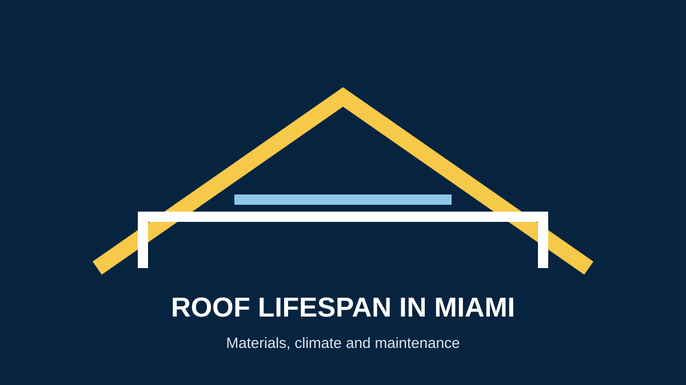

How Long Does a Roof Last in Miami?
The answer to how long a roof lasts in Miami depends on the roofing material, installation quality, ventilation, maintenance, exposure and storm history. Published lifespan figures are useful planning ranges—not guarantees for every property.
Roof lifespan by material
| Material | Common planning range | What affects it |
|---|---|---|
| Asphalt shingles | Often about 15–25+ years depending on product | Heat, UV exposure, ventilation, installation and storms |
| Metal | Often several decades | Coating, corrosion exposure, installation and maintenance |
| Tile | Often several decades or longer | Tile type, underlayment, fastening, structure and maintenance |
Manufacturer specifications should be checked for the exact product rather than treating a generic lifespan as a warranty.
Why Miami's climate matters
Florida roofs deal with intense sun, heat, heavy rain, humidity and tropical storms. Wind and debris can shorten the practical life of a roof even when its material has a longer theoretical service life.
What can shorten roof life?
- Poor installation or unsuitable materials
- Repeated storm or wind damage
- Persistent moisture or drainage problems
- Blocked drainage and neglected maintenance
- Ventilation problems that increase heat and moisture stress
- Deferred repairs that allow small defects to become larger failures
How maintenance can help
Routine inspections can identify loose, damaged or deteriorated components before they become larger problems. After significant storms, a professional inspection is especially useful if you see new leaks or visible damage.
Read our Florida roof inspection guide and Miami roof inspection service.
When should you consider replacement?
Age alone does not decide whether a roof needs replacement. Recurring leaks, widespread deterioration, storm damage or an aging system may justify a replacement assessment. See signs you may need a new roof.
Schedule a Roof Inspection →Sources and further reading
- National Roofing Contractors Association (NRCA)
- GAF — Roofing Resources
- Owens Corning — Roofing Resources
- Florida Building Code Online